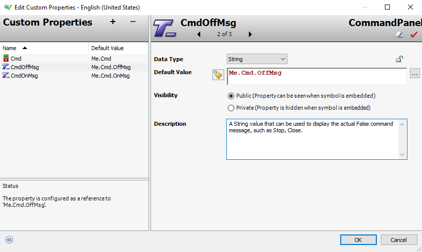

Edit Custom Properties dialog — the CmdOnMsg property being configured with String data type. The toggle button to the left of the Default Value field allows switching between Static Text mode and Expression/Reference mode.
Source: AVEVA™ Operations Management Interface 2023 — Module 3: Industrial Graphics, Section 5
Pages 235–236 (Book pages 3-97 to 3-98)
Custom properties allow you to extend the functionality of embedded symbols by creating user-defined data fields. Rather than relying solely on built-in properties, custom properties give you the flexibility to bind additional values, expressions, automation object attributes, element properties, or even script functions to a symbol. This mechanism is essential for building reusable, configurable symbols that adapt to different contexts at runtime.
When public custom properties exist for an embedded symbol, they appear on the Properties tab under the Custom Properties category when that symbol is selected in the Graphic Editor.
You manage custom properties through the Edit Custom Properties dialog box. To open it, click the drawing canvas to ensure no element or embedded symbol is selected, then right-click the canvas and choose Custom Properties. From within this dialog you can add new properties with the Add custom property button (+), remove properties with the Remove custom property button (−), or rename a property by clicking its name in the list to make it editable.
The following example shows three custom properties already configured for the CommandPanel symbol: Cmd, CmdOffMsg, and CmdOnMsg. Each property is bound to a reference expression that resolves at runtime within the context of the automation object.

Me.Cmd.OffMsg, Public visibility, and descriptive text.Each custom property has four key configuration areas: Data Type, Default Value, Visibility, and Description. Understanding these settings is critical for building functional symbols.
| Setting | Description | Notes |
|---|---|---|
| Data Type | Select from the drop-down list: Boolean, Double, ElapsedTime, Float, Integer, String, Time, or HistorySummary. | Determines what kind of data the property will process. |
| Default Value | The initial value for the property. Can be a literal value, a reference, or an expression. Click the ellipsis (...) button to browse through the Galaxy Browser. |
For String, Time, or ElapsedTime types, a toggle button switches between Static Text and Expression/Reference modes. |
| Visibility | Controls whether the property is exposed when the symbol is embedded in other symbols or layouts. | Public: visible and configurable. Private: hidden/inaccessible. |
| Description | A brief note about the property's purpose or usage tips. | Built-in symbols include helpful guidance; for user-created properties, document the intended use. |
The Visibility setting determines how a custom property behaves when the symbol is embedded in other symbols or assigned to layout panes. A Public property is visible and can be configured by designers when the symbol is used elsewhere. A Private property is hidden and inaccessible in embedded contexts. This distinction is useful for hiding internal configurations that you do not want other designers to modify.
The Description field provides a brief note about what the property does. For symbols from a built-in library, the description typically contains helpful tips on how to use the custom property. For user-created properties, it is best practice to document the intended use clearly, as this text serves as inline documentation for other designers who may work with the symbol later.
A custom property can contain a literal value, a valid expression, an automation object attribute, a property of an element or embedded symbol, a custom property of an embedded symbol, or a script function.
Click the drawing canvas to ensure nothing is selected, then right-click the canvas and select Custom Properties.
A Public property is visible and configurable when the symbol is embedded in other symbols or layouts. A Private property is hidden and inaccessible in embedded contexts, which is useful for protecting internal configurations.
Expression or Reference mode is used when the Default Value should be evaluated as a dynamic expression or resolved as a reference to another attribute at runtime, rather than being treated as a fixed text string. This is necessary for binding properties to automation object data.